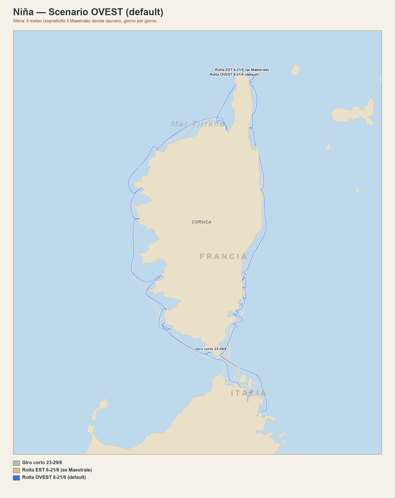

Il giro previsto
Come pensiamo di girare Corsica e Sardegna dall'8 al 29 agosto — prova il simulatore qui sotto.

Tocca la mappa per ingrandire.
Giorno per giorno — rotta OVEST
Caricamento…
🏝️ Giro corto — 23→29/8
Ultima settimana: tra le isole a nord della Sardegna e il sud della Corsica, secondo il meteo del momento — un solo piano, non cambia col simulatore.
Caricamento…
🌬️ Simulatore vento — giorno per giorno
Tocca un giorno, scegli da dove soffia e quanto forte — lo stesso calcolo che usa la plancia ogni giorno vero, sulle 10 rade con dati di riparo verificati. Sposta il Maestrale avanti o indietro nel calendario e guarda come cambiano rotta consigliata e rade sicure.
Tappe fisse
Caricamento…
Queste date non si spostano col meteo: sono i cambi equipaggio (voli/traghetti già prenotati). Tutto il resto — dove si dorme le altre notti — è la parte che decide il bollettino.